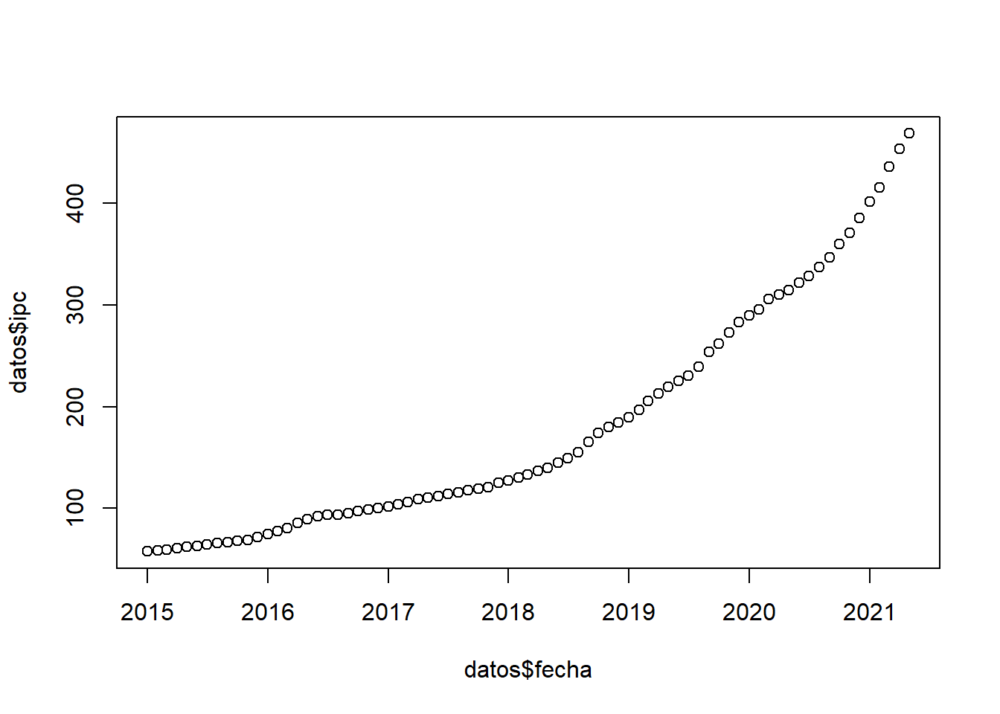
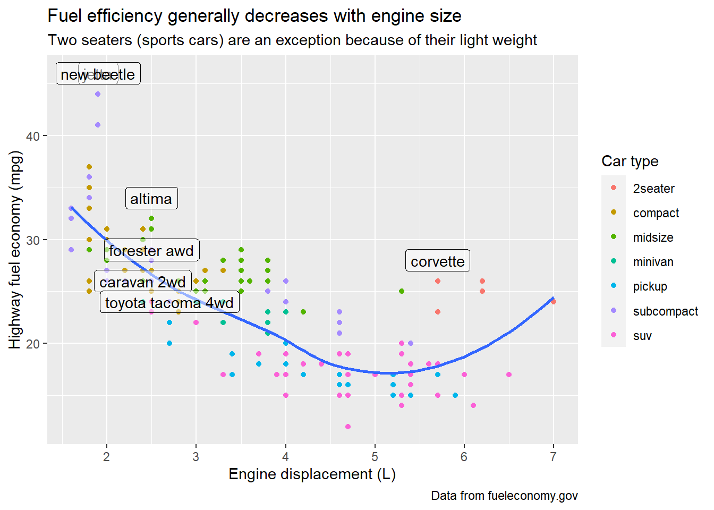

Capítulo 2 Base de datos
En esta clase nos vamos a centrar en el uso de tidyverse. Además vamos a utilizar funciones de lubridate y zoo que tienen algunas funciones especiales para trabajar con fechas.
En R existen dos tipos de bases de datos data.frame() y tibble() que son las bases de datos de tidyverse el mejor paquete para manipulación y transformación de datos (ver Wickham and Grolemund (2017)). Un data.frame (objeto df) se convierte fácilmente a tibble (y viceversa).
Las tibbles tienen algunas funciones especiales como poder usar nombres de variables con espacio (se deben utilizar back ticks).
## # A tibble: 1 x 2
## `Plazo Fijo` `2000`
## <chr> <chr>
## 1 espacio numero2.1 Directorio de trabajo
2.2 Cargar datos
# CSV
bd = read.csv("b_datos.csv", header=TRUE, stringsAsFactors=TRUE, sep=",")
# TXT / Esta es la más eficiente porque permite paralelizar con multithread
bd = data.table::fread('b_datos.txt', header=TRUE, stringsAsFactors=F, sep='\t', nThread=2)
bd = read.delim('datos/b_datos.txt', header=TRUE, stringsAsFactors=F, sep='\t')# Excel
bd = readxl::read_excel('datos_wb.xlsx', sheet='1') # En datos_pd esta la ruta de acceso completa | year | cname | ccode | gdp_pc2010 | gdp_pc2017 | gdp_2010 | credit_ps | inv | exports | imports | popu |
|---|---|---|---|---|---|---|---|---|---|---|
| 2,011 | Argentina | ARG | 10,883 | 24,648 | 449,061,807,872 | 14.0 | 17.2 | 18.4 | 16.8 | 41,261,490 |
| 2,011 | Brazil | BRA | 11,628 | 15,323 | 2,296,661,602,092 | 58.1 | 20.6 | 11.6 | 12.4 | 197,514,541 |
| 2,011 | Chile | CHL | 13,456 | 22,338 | 231,892,203,586 | 101.3 | 23.1 | 37.8 | 34.4 | 17,233,584 |
| 2,011 | France | FRA | 41,369 | 42,864 | 2,703,188,933,543 | 96.8 | 22.4 | 28.4 | 30.4 | 65,342,789 |
| 2,011 | Italy | ITA | 36,228 | 42,892 | 2,151,209,302,546 | 94.1 | 19.7 | 26.9 | 28.3 | 59,379,449 |
| 2,011 | United Kingdom | GBR | 39,729 | 42,294 | 2,513,237,223,478 | 170.6 | 15.6 | 30.7 | 31.7 | 63,258,810 |
2.2.1 Ingrasar datos con tidyverse
| Comando | Separador |
|---|---|
read_csv() |
coma |
read_csv2() |
punto y coma |
read_tsv() |
tab |
read_delim() |
otros |
2.2.2 Bases de Stata
2.3 Problemas de imputación
Ver más especificaciones aquí
## logi [1:3] TRUE FALSE NA## int [1:3] 1 2 3## Date[1:2], format: "2010-01-01" "1979-10-14"## [1] 1 231 NA 456## [1] 1.23# Base de datos
challenge <- read_csv(
readr_example("challenge.csv"),
col_types = cols(
x = col_double(),
y = col_date()
)
)
tail(challenge)## # A tibble: 6 x 2
## x y
## <dbl> <date>
## 1 0.805 2019-11-21
## 2 0.164 2018-03-29
## 3 0.472 2014-08-04
## 4 0.718 2015-08-16
## 5 0.270 2020-02-04
## 6 0.608 2019-01-062.4 Exportar datos
# CSV
write.csv(bd,"b_datos.csv")
write_csv()
write_excel_csv()
# TXT
write_delim()
write_tsv()
# Excel
library("xlsx")
# Primera base de datos
write.xlsx(USArrests, file = "b_datos.xlsx", sheetName = "IRIS", append = FALSE)
# Segunda base de datos
write.xlsx(mtcars, file = "b_datos.xlsx", sheetName="MTCARS", append=TRUE)2.5 Variables
library(tidyverse)
bd1 = bd %>%
mutate(gdp_pc2010bis = gdp_2010 / popu, # crear
open = exports + imports,
inv_demean = inv - mean(inv)) %>%
rename(poblacion = popu) %>% # rename (newname = oldname)
mutate(gdp_2010 = NULL) # drop (también con select())| year | cname | gdp_pc2010 | gdp_pc2010bis | open | inv_demean |
|---|---|---|---|---|---|
| 2,011 | Argentina | 10,883 | 10,883 | 35.2 | -2 |
| 2,011 | Brazil | 11,628 | 11,628 | 23.9 | 2 |
| 2,011 | Chile | 13,456 | 13,456 | 72.2 | 4 |
| 2,011 | France | 41,369 | 41,369 | 58.8 | 4 |
| 2,011 | Italy | 36,228 | 36,228 | 55.1 | 1 |
| 2,011 | United Kingdom | 39,729 | 39,729 | 62.4 | -3 |
2.6 Merge

| year | cname | region |
|---|---|---|
| 2011 | Argentina | Latin America & Caribbean |
| 2011 | Brazil | Latin America & Caribbean |
| 2011 | Chile | Latin America & Caribbean |
| 2011 | France | Europe & Central Asia |
| 2011 | Italy | Europe & Central Asia |
| 2011 | United Kingdom | Europe & Central Asia |
2.7 group_by, mutate
bd$id = as.numeric(factor(bd$ccode))
# Si quiero usar una función propia
demean = function(x) {x - mean(x, na.rm = TRUE)}
bd = bd %>%
mutate(open = exports + imports) %>%
dplyr::select(ccode, year, region, gdp_pc2017, credit_ps, inv, id, open) %>%
arrange(ccode, year) %>%
group_by(ccode) %>%
mutate(obs = seq(1:length(ccode)), # igual con row_number()
gdp_gr = 100 * (gdp_pc2017 / lag(gdp_pc2017,1) - 1),
credit_ps_mean = mean(credit_ps, na.rm = TRUE),
dev = if_else(region=='Latin America & Caribbean', 0, 1),
gdp_dem = demean(gdp_pc2017)) %>%
ungroup()
head(bd[c('ccode', 'dev', 'year', 'gdp_pc2017', 'gdp_gr', 'gdp_dem')],10)## # A tibble: 10 x 6
## ccode dev year gdp_pc2017 gdp_gr gdp_dem
## <chr> <dbl> <dbl> <dbl> <dbl> <dbl>
## 1 ARG 0 2011 24648. NA 1451.
## 2 ARG 0 2012 24119. -2.15 922.
## 3 ARG 0 2013 24424. 1.27 1227.
## 4 ARG 0 2014 23550. -3.58 353.
## 5 ARG 0 2015 23934. 1.63 737.
## 6 ARG 0 2016 23190. -3.11 -7.58
## 7 ARG 0 2017 23597. 1.76 400.
## 8 ARG 0 2018 22759. -3.55 -438.
## 9 ARG 0 2019 22064. -3.06 -1133.
## 10 ARG 0 2020 19687. -10.8 -3511.# case_when() permite evaluar más de 2 alternativas
df <- tibble(
a = seq(1,5)
)
df = df %>% mutate(b = case_when(a <= 2 ~ 1,
a > 2 & a <= 4 ~ 2,
TRUE ~ as.double(a)))
df## # A tibble: 5 x 2
## a b
## <int> <dbl>
## 1 1 1
## 2 2 1
## 3 3 2
## 4 4 2
## 5 5 52.8 Guardar datos
| ccode | year | region | gdp_gr | credit_ps | inv | open |
|---|---|---|---|---|---|---|
| ARG | 2018 | Latin America & Caribbean | -3.6 | NA | 14.7 | 31.2 |
| ARG | 2019 | Latin America & Caribbean | -3.1 | NA | 13.5 | 32.6 |
| ARG | 2020 | Latin America & Caribbean | -10.8 | NA | 13.4 | 30.5 |
| BRA | 2018 | Latin America & Caribbean | 1.0 | 60.2 | 15.1 | 28.9 |
| BRA | 2019 | Latin America & Caribbean | 0.7 | 62.6 | 15.3 | 28.5 |
| BRA | 2020 | Latin America & Caribbean | -4.7 | 70.2 | 16.4 | 32.4 |
| GBR | 2018 | Europe & Central Asia | 0.6 | 134.6 | 17.8 | 63.0 |
| GBR | 2019 | Europe & Central Asia | 0.8 | 133.5 | 18.0 | 63.4 |
| GBR | 2020 | Europe & Central Asia | -10.3 | 146.4 | 17.6 | 55.1 |
| ITA | 2018 | Europe & Central Asia | 1.1 | 76.7 | 17.8 | 60.3 |
| ITA | 2019 | Europe & Central Asia | 1.5 | 74.3 | 18.0 | 60.1 |
| ITA | 2020 | Europe & Central Asia | -8.6 | 83.6 | 17.8 | 55.3 |
2.9 Valores missing
Son tratados como los valores más grandes de todos pero el replace los respeta.
## # A tibble: 5 x 2
## a b
## <int> <int>
## 1 1 5
## 2 3 4
## 3 2 3
## 4 5 2
## 5 4 1df2 = df2 %>% mutate(b = ifelse(b == 2, NA, b))
df2 = df2 %>% mutate(c = ifelse(b > 3, 0, b))
df2 = df2 %>% arrange(b)
df2## # A tibble: 5 x 3
## a b c
## <int> <int> <dbl>
## 1 4 1 1
## 2 2 3 3
## 3 3 4 0
## 4 1 5 0
## 5 5 NA NA2.9.1 Eliminar valores missing
Se debe tener presente que se elimina la fila completa.
## tibble [60 x 7] (S3: tbl_df/tbl/data.frame)
## $ ccode : chr [1:60] "ARG" "ARG" "ARG" "ARG" ...
## $ year : num [1:60] 2011 2012 2013 2014 2015 ...
## $ region : chr [1:60] "Latin America & Caribbean" "Latin America & Caribbean" "Latin America & Caribbean" "Latin America & Caribbean" ...
## $ gdp_gr : num [1:60] NA -2.15 1.27 -3.58 1.63 ...
## $ credit_ps: num [1:60] 14 15.2 15.7 13.8 14.4 ...
## $ inv : num [1:60] 17.2 15.9 16.3 16 15.6 ...
## $ open : num [1:60] 35.2 30.5 29.3 28.4 22.5 ...## ccode year region gdp_gr
## Length:60 Min. :2011 Length:60 Min. :-10.7750
## Class :character 1st Qu.:2013 Class :character 1st Qu.: -2.7656
## Mode :character Median :2016 Mode :character Median : 0.7100
## Mean :2016 Mean : -0.6777
## 3rd Qu.:2018 3rd Qu.: 1.4095
## Max. :2020 Max. : 4.3092
## NA's :6## [1] 50## [1] 42.10 Loop
set.seed(1234)
df <- tibble(
a = runif(100, min=0, max=100),
b = rnorm(100, 0, 1),
c = rnorm(100, mean=5, sd=3),
)
head(df,3)## # A tibble: 3 x 3
## a b c
## <dbl> <dbl> <dbl>
## 1 11.4 -1.81 3.87
## 2 62.2 -0.582 5.29
## 3 60.9 -1.11 9.92# Reemplazar variables existentes
vars = names(df)
for (v in vars) {
df[v] = df[v] * 100
}
head(df,3)## # A tibble: 3 x 3
## a b c
## <dbl> <dbl> <dbl>
## 1 1137. -181. 387.
## 2 6223. -58.2 529.
## 3 6093. -111. 992.# Generar varaibles nuevas
# Dividir las dos ultimas (b y c) por la primera (a)
set.seed(1234)
df1 <- tibble(
a = rep(2, 100),
b = rnorm(100, 0, 1),
c = rnorm(100, 5, 3),
)
vars = names(df1[2:length(df1)])
for (v in vars) {
df1[paste0(v,'_a')] = df1[v] / df1[['a']]
}
head(df1,3)## # A tibble: 3 x 5
## a b c b_a c_a
## <dbl> <dbl> <dbl> <dbl> <dbl>
## 1 2 -1.21 6.24 -0.604 3.12
## 2 2 0.277 3.58 0.139 1.79
## 3 2 1.08 5.20 0.542 2.602.11 Pivot

# Long
bdAR = bd %>%
filter(ccode=='ARG') %>%
select(year, credit_ps, inv) %>%
pivot_longer(cols=-year, names_to="Var", values_to="Val") %>%
arrange(year, desc(Var)) # Sort| year | Var | Val |
|---|---|---|
| 2011 | inv | 17.2 |
| 2011 | credit_ps | 14.0 |
| 2012 | inv | 15.9 |
| 2012 | credit_ps | 15.2 |
| 2013 | inv | 16.3 |
| 2013 | credit_ps | 15.7 |
# Wide
bdAR2 = bdAR %>%
filter(Var=='credit_ps', year <=2015) %>%
mutate(ccode = 'ARG') %>%
pivot_wider(id_cols=ccode, names_from=year, values_from=Val) %>%
rename_with(~ paste0("CREDIT", 2011:2015), where(is.numeric))| ccode | CREDIT2011 | CREDIT2012 | CREDIT2013 | CREDIT2014 | CREDIT2015 |
|---|---|---|---|---|---|
| ARG | 14 | 15.2 | 15.7 | 13.8 | 14.4 |
# Otra forma de llevar a long starts_with()
bdAR3 = bdAR2 %>%
pivot_longer(cols = starts_with("CREDIT"), names_to="Var", values_to="Val") %>%
separate(Var, c("V","year"), sep = 6)
#unite() para concatenar variables| ccode | V | year | Val |
|---|---|---|---|
| ARG | CREDIT | 2011 | 14.0 |
| ARG | CREDIT | 2012 | 15.2 |
| ARG | CREDIT | 2013 | 15.7 |
| ARG | CREDIT | 2014 | 13.8 |
| ARG | CREDIT | 2015 | 14.4 |
2.12 Append
bdAR = bd %>%
filter(ccode=="ARG",
year>=2018) %>%
select(year, ccode, gdp_gr)
bdBR = bd %>%
filter(ccode=="BRA",
year>=2018) %>%
select(year, ccode, gdp_gr)
bdARBR = rbind(bdAR, bdBR)
# Ver bind_rows() de tidyverse| year | ccode | gdp_gr |
|---|---|---|
| 2018 | ARG | -3.6 |
| 2019 | ARG | -3.1 |
| 2020 | ARG | -10.8 |
| 2018 | BRA | 1.0 |
| 2019 | BRA | 0.7 |
| 2020 | BRA | -4.7 |
2.13 Strings
## [1] 3## [1] 3 3 4## [1] "uno" "dos" "cinco"## [1] "diez" "dos" "cinco"## [1] 42.14 Fechas
2.14.1 Year
%Y (4 digitos).
%y (2 digitos); 00-69 -> 2000-2069, 70-99 -> 1970-1999.
2.14.2 Month
%m (2 digitos).
%b (nombre abreviado, “Jan”).
%B (nombre completo, “January”).
2.14.3 Day
%d (2 digitos).
library(zoo)
library(lubridate)
datos = readxl::read_excel('datos_ts.xlsx', sheet='datos')
datos$fecha = as.Date(datos$fecha, format = '%Y-%m-%d')
datos$fecha2 = datos$fecha + days(15)
datos$fecha3 = floor_date(datos$fecha2, 'month')
datos$mes = month(datos$fecha)
datos$year = year(datos$fecha)
datos = datos[,c(1,5,6,7,8,2,3,4)] # reordena la base de datos| fecha | …5 | fecha2 | fecha3 | mes | ipc | tcn | emae_sa |
|---|---|---|---|---|---|---|---|
| 2015-01-01 | 2015q1 | 2015-01-16 | 2015-01-01 | 1 | 57.6 | 8.6 | 144.2 |
| 2015-02-01 | 2015q1 | 2015-02-16 | 2015-02-01 | 2 | 58.5 | 8.7 | 148.0 |
| 2015-03-01 | 2015q1 | 2015-03-16 | 2015-03-01 | 3 | 59.5 | 8.8 | 147.7 |
| 2015-04-01 | 2015q2 | 2015-04-16 | 2015-04-01 | 4 | 60.9 | 8.9 | 149.8 |
| 2015-05-01 | 2015q2 | 2015-05-16 | 2015-05-01 | 5 | 62.2 | 9.0 | 149.7 |
| 2015-06-01 | 2015q2 | 2015-06-16 | 2015-06-01 | 6 | 63.0 | 9.1 | 150.6 |
2.14.4 Manipulación de fechas
Utilizamos el paquete zoo
datosq <- readxl::read_excel('datos_ts.xlsx', sheet='trim') %>%
mutate(fecha=as.Date(as.yearqtr(paste(year, trim), format="%Y %q")))| year | trim | ipc | tcn | emae_sa | fecha |
|---|---|---|---|---|---|
| 2015 | 1 | 57.6 | 8.6 | 144.2 | 2015-01-01 |
| 2015 | 2 | 60.9 | 8.9 | 149.8 | 2015-04-01 |
| 2015 | 3 | 64.3 | 9.2 | 150.8 | 2015-07-01 |
| 2015 | 4 | 67.7 | 9.5 | 149.4 | 2015-10-01 |
| 2016 | 1 | 74.7 | 13.9 | 147.8 | 2016-01-01 |
| 2016 | 2 | 85.5 | 14.3 | 145.0 | 2016-04-01 |
2.15 Análisis de datos
## tibble [60 x 7] (S3: tbl_df/tbl/data.frame)
## $ ccode : chr [1:60] "ARG" "ARG" "ARG" "ARG" ...
## $ year : num [1:60] 2011 2012 2013 2014 2015 ...
## $ region : chr [1:60] "Latin America & Caribbean" "Latin America & Caribbean" "Latin America & Caribbean" "Latin America & Caribbean" ...
## $ gdp_gr : num [1:60] NA -2.15 1.27 -3.58 1.63 ...
## $ credit_ps: num [1:60] 14 15.2 15.7 13.8 14.4 ...
## $ inv : num [1:60] 17.2 15.9 16.3 16 15.6 ...
## $ open : num [1:60] 35.2 30.5 29.3 28.4 22.5 ...## [1] 60 7## [1] "ccode" "year" "region" "gdp_gr" "credit_ps" "inv"
## [7] "open"## Rows: 60
## Columns: 7
## $ ccode <chr> "ARG", "ARG", "ARG", "ARG", "ARG", "ARG", "ARG", "ARG", "ARG~
## $ year <dbl> 2011, 2012, 2013, 2014, 2015, 2016, 2017, 2018, 2019, 2020, ~
## $ region <chr> "Latin America & Caribbean", "Latin America & Caribbean", "L~
## $ gdp_gr <dbl> NA, -2.1452844, 1.2656852, -3.5785805, 1.6296643, -3.1100639~
## $ credit_ps <dbl> 14.00872, 15.21282, 15.72909, 13.82377, 14.41423, 13.66763, ~
## $ inv <dbl> 17.24828, 15.85753, 16.28951, 15.97995, 15.56475, 14.27236, ~
## $ open <dbl> 35.20615, 30.52654, 29.33393, 28.40679, 22.48623, 26.09389, ~## # A tibble: 6 x 7
## ccode year region gdp_gr credit_ps inv open
## <chr> <dbl> <chr> <dbl> <dbl> <dbl> <dbl>
## 1 ARG 2011 Latin America & Caribbean NA 14.0 17.2 35.2
## 2 ARG 2012 Latin America & Caribbean -2.15 15.2 15.9 30.5
## 3 ARG 2013 Latin America & Caribbean 1.27 15.7 16.3 29.3
## 4 ARG 2014 Latin America & Caribbean -3.58 13.8 16.0 28.4
## 5 ARG 2015 Latin America & Caribbean 1.63 14.4 15.6 22.5
## 6 ARG 2016 Latin America & Caribbean -3.11 13.7 14.3 26.12.15.1 Tablas
Los valores NA afectan a todas las estadísticas. Opción na.rm = F/T
## # A tibble: 1 x 3
## credit_ps_media inv_max open_min
## <dbl> <dbl> <dbl>
## 1 NA 24.9 22.52.16 group_by, summarise
tab = bd %>%
dplyr::select(credit_ps, inv, open) %>%
mutate(id = 1) %>% # esta variable es solo para usar pivot, despues la dropeo
pivot_longer(cols = -id, names_to = 'Variable', values_to = 'Value') %>%
mutate(id = NULL) %>%
group_by(Variable) %>%
summarise(
Obs = n(),
Media = mean(Value, na.rm = T),
Mediana = median(Value, na.rm = T),
SD = sd(Value, na.rm = T),
Min = min(Value, na.rm = T),
Max = max(Value, na.rm = T)) %>%
ungroup()
tab## # A tibble: 3 x 7
## Variable Obs Media Mediana SD Min Max
## <chr> <int> <dbl> <dbl> <dbl> <dbl> <dbl>
## 1 credit_ps 60 89.7 94.6 38.9 13.7 171.
## 2 inv 60 18.8 17.8 3.19 13.4 24.9
## 3 open 60 49.1 56.2 15.7 22.5 72.2tab = bd %>%
filter(year>=2015) %>%
group_by(year, region) %>%
summarise(
inv_sum = sum(inv, na.rm = T),
inv_sd = sd(inv, na.rm = T),
credit_ps_p50 = median(credit_ps, na.rm = T),
obs = n()
) %>%
arrange(year) %>%
ungroup()
tab## # A tibble: 12 x 6
## year region inv_sum inv_sd credit_ps_p50 obs
## <dbl> <chr> <dbl> <dbl> <dbl> <int>
## 1 2015 Europe & Central Asia 55.7 2.55 95.1 3
## 2 2015 Latin America & Caribbean 57.2 4.24 66.8 3
## 3 2016 Europe & Central Asia 56.7 2.54 97.4 3
## 4 2016 Latin America & Caribbean 52.5 4.57 62.2 3
## 5 2017 Europe & Central Asia 58.0 2.76 101. 3
## 6 2017 Latin America & Caribbean 50.7 3.57 59.5 3
## 7 2018 Europe & Central Asia 58.6 2.93 104. 3
## 8 2018 Latin America & Caribbean 51.2 3.81 88.6 3
## 9 2019 Europe & Central Asia 59.6 3.26 108. 3
## 10 2019 Latin America & Caribbean 51.8 4.98 93.2 3
## 11 2020 Europe & Central Asia 58.2 3.02 124. 3
## 12 2020 Latin America & Caribbean 50.7 3.78 70.2 3tab = tab %>% mutate(region = str_replace(region, c('Europe & Central Asia', 'Latin America & Caribbean'), c('EU', 'LA'))) %>%
pivot_longer(cols=-c(year, region), names_to='Var', values_to='Val') %>%
unite(id,region, Var) %>%
pivot_wider(id_cols=year, names_from=id, values_from=Val)
tab## # A tibble: 6 x 9
## year EU_inv_sum EU_inv_sd EU_credit_ps_p50 EU_obs LA_inv_sum LA_inv_sd
## <dbl> <dbl> <dbl> <dbl> <dbl> <dbl> <dbl>
## 1 2015 55.7 2.55 95.1 3 57.2 4.24
## 2 2016 56.7 2.54 97.4 3 52.5 4.57
## 3 2017 58.0 2.76 101. 3 50.7 3.57
## 4 2018 58.6 2.93 104. 3 51.2 3.81
## 5 2019 59.6 3.26 108. 3 51.8 4.98
## 6 2020 58.2 3.02 124. 3 50.7 3.78
## # ... with 2 more variables: LA_credit_ps_p50 <dbl>, LA_obs <dbl>2.17 Vector de resultados
set.seed(1234)
df <- tibble(
a = runif(100, min=0, max=100),
b = rnorm(100,0,1),
c = rnorm(100, mean=5, sd=3),
)
output <- vector("double", ncol(df)) # 1. verctor de resultados (vacio)
for (i in seq_along(df)) { # 2. secuencia
output[[i]] <- mean(df[[i]]) # 3. cuerpo
}
output## [1] 43.74972619 0.07975381 5.409726452.18 Gráficos


2.19 GGPlot
Grammar of Graphics.
#SINTAXIS
# ggplot(data = <DATA>) +
# <GEOM_FUNCTION>(mapping = aes(<MAPPINGS>)) # se agregan layers (piont, line, etc.)
# aes() "aesthetic" define la estética del gráfico
library(ggplot2)
datos1 = datos %>%
select(fecha, ipc)
ggplot(datos1, aes(x=fecha, y=ipc)) +
geom_line(color = 'steelblue2', size = 1.2) +
theme_minimal() +
labs(title="Indice de precios al consumidor", x="Mes", y="IPC") +
theme(legend.position="none") +
NULL
# Selecciona el mejor de cada clase de acuerdo al consumo en highway
best_in_class <- mpg %>%
group_by(class) %>%
filter(row_number(desc(hwy)) == 1)
g = ggplot(mpg, aes(displ, hwy)) +
geom_point(aes(colour = class)) +
geom_smooth(se = FALSE) +
geom_label(aes(label = model), data = best_in_class, nudge_y = 2, alpha = 0.5) +
labs(title = "Fuel efficiency generally decreases with engine size",
subtitle = "Two seaters (sports cars) are an exception because of their light weight",
x = "Engine displacement (L)",
y = "Highway fuel economy (mpg)",
colour = "Car type",
caption = "Data from fueleconomy.gov") +
NULL
g
2.20 Guardar un gráfico
Bibliografia
Wickham, Hadley, and Garrett Grolemund. 2017. R for Data Science. O’REILLY. https://r4ds.had.co.nz/.